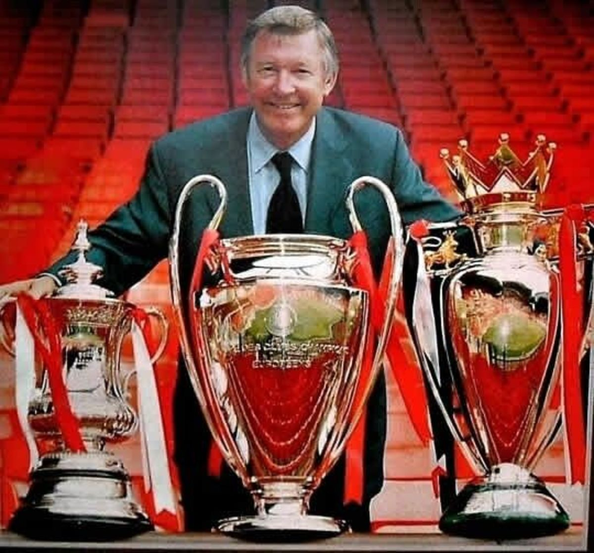

Trophies
1999 Manchester United Treble

- 20 League Titles
- 1907-08, 1910-11, 1951-52, 1955-56, 1956-57, 1964-65, 1966-67
- 1992-93, 1993-94, 1995-96, 1996-97, 1998-99, 1999-2000
- 2000-01, 2002-03, 2006-07, 2007-08, 2008-09, 2010-11, 2012-13
- 3 Champions League Titles
- 13 FA Cup Titles
- 1909, 1948, 1963, 1977, 1983, 1985
- 1990, 1994, 1996, 1999
- 2004, 2016, 2024
- 6 League Cup Titles
- 1992, 2006, 2009, 2010, 2017, 2023
- 1 Europa League Title
- 21 FA Community Shield Titles
- 1908, 1911, 1952, 1956, 1957, 1965, 1967, 1977, 1983
- 1990, 1993, 1994, 1996, 1997
- 2003, 2007, 2008, 2010, 2011, 2013, 2016
History
Manchester United was founded in 1878 as Newton Heath and became Manchester United in 1902.
The club saw early success under Sir Matt Busby, surviving the tragic 1958 Munich Air Disaster and winning the European Cup in 1968.
The most dominant era came under Sir Alex Ferguson (1986–2013), where United won 13 Premier League titles, 2 Champions Leagues, and completed a historic treble in 1999.
Legends like George Best, Eric Cantona, David Beckham, Cristiano Ronaldo, and Wayne Rooney helped build United into a global football powerhouse.
Despite ups and downs after Ferguson's retirement, United remains one of the world’s most popular and valuable clubs, with a rich legacy and massive global fanbase.